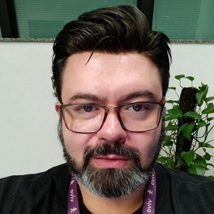

Tatiane
30 anos, moro em São José dos Campos-SP. Estou cursando engenharia da computação na UNIMAR EAD. Tenho experiência de 4 meses como estagiária em uma escola da rede pública, onde desenvolvi habilidades de monitoramento das atividades dos alunos nos computadores da escola. Realizar instalações e atualizações de software, desenvolver relatórios. Tenho interesse em seguir carreira na área T.I, tenho conhecimentos em HTML, CSS, Javascript, Java que adquiri através do treinamento da empresa: Grande Porte. Estou em busca de uma oportunidade de estagio como desenvolvedora front-end.
.
Eliane N
Sólida experiência profissional em empresas de diferentes setores e níveis de serviços. Gestão e Planejamento Empresarial por meios de Gestão administrativa de Projetos. Elaboração de relatórios gerenciais. Customer Services, gerenciamento operacional, em interface com demais áreas e de suporte para clientes B2B. Vivencia em Gestão de Riscos e Governança de TI e Operações. Conhecimentos em Metodologias de Gerenciamento de projetos: ITIL, COBIL, Norma ISO 9001 2015 (Gestão de Riscos), Scrum, Ágil. PMO - MS Projects, SAP, Mycrosoft Dynamics, (Sharepoint, Pacote Office nível Avançado. Conhecimento em VBA, ERP, CRM, CSS, Java, Oracle (Oracle e-Business Suite, Oracle Beehive, Oracle Business Inteligent), Linux, Microsoft, IOS, My SQL). - Graduada em gestão de pessoas. - Pôs Graduação em Gerenciamento de projetos. - Gestão de Tecnologia da Informação. - Cursando Engenharia da Computação.
.

Henrique Matias
39 anos e à 15 anos atuando na área de Ti, professor de Computação para comunidades carentes, Técnico de infra estrutura, Técnico de manutenção, Analista de Redes, Suporte e BackOffice de Operação, Engenheiro de Telecom e Leader Tech. Nós meus últimos anos encarei desafios como tomar a posição de liderança e desenvolver soluções de DevOps focados para telecom, onde criei muito carinho pela área de desenvolvimento e isso me levou a procurar uma chance nas áreas focadas em desenvolvimento.
.